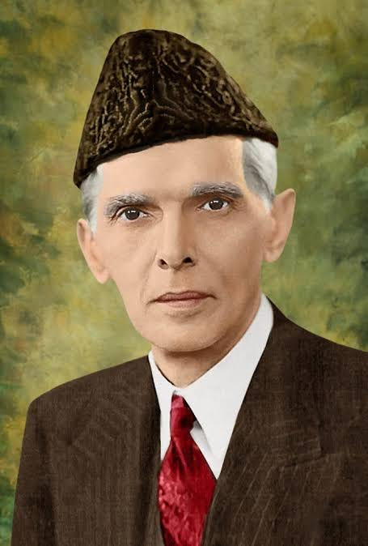

Life & Legacy
The making of a Quaid
Muhammad Ali Jinnah was born on 25 December 1876 in Karachi, into a Gujarati merchant family. He was sent to London as a teenager to learn the family trade, but he abandoned business apprenticeship for the law almost as soon as he arrived, enrolling at Lincoln's Inn and qualifying as a barrister before he turned twenty. That early decision to follow his own judgment over his father's plans became something of a pattern — Jinnah spent the rest of his life arguing cases, first in courtrooms and later on the floor of national politics, always on his own terms.
Back in India, Jinnah built a formidable legal practice in Bombay and entered the Indian National Congress, where for nearly two decades he was known as an ambassador of Hindu-Muslim unity rather than a champion of division. He helped broker the 1916 Lucknow Pact between the Congress and the Muslim League, and colleagues on both sides regarded him as a principled, almost severe constitutionalist — a man who preferred a well-argued clause to a crowd-pleasing speech.
The final two decades of his life told a different story. Disillusioned by what he saw as the marginalisation of Muslim political interests within a unitary Indian state, Jinnah gradually became convinced that Muslims and Hindus formed two distinct nations that could not safely share a single government. He rebuilt the Muslim League into a mass movement, and his 1940 Lahore Resolution turned that conviction into a concrete demand: a separate homeland for the Muslims of British India.
On 14 August 1947, that demand became a country. Jinnah was sworn in as Pakistan's first Governor-General, a role he treated as anything but ceremonial — in the chaos and violence of Partition, he pushed for the rule of law, for the protection of minorities, and for the new state's institutions to be built quickly and soundly. He held that office for barely a year, succumbing to tuberculosis on 11 September 1948, but the country he spent his final energy assembling has called him Quaid-e-Azam, the Great Leader, ever since.
“Think a hundred times before you take a decision, but once that decision is taken, stand by it as one man.”
— Muhammad Ali Jinnah
Key Milestones
A life measured in decisions
-
1876
Born in Karachi
Born to a Gujarati merchant family on 25 December.
-
1896
Called to the Bar
Qualified as a barrister at Lincoln's Inn, London, one of the youngest Indians to do so.
-
1916
The Lucknow Pact
Helped negotiate an agreement between the Congress and the Muslim League on constitutional reform.
-
1940
The Lahore Resolution
Presided over the League session that formally demanded a separate Muslim homeland.
-
1947
Founder of Pakistan
Pakistan gained independence on 14 August; Jinnah became its first Governor-General.
-
1948
Death in Karachi
Died on 11 September, a little over a year after the country's founding.
Watch